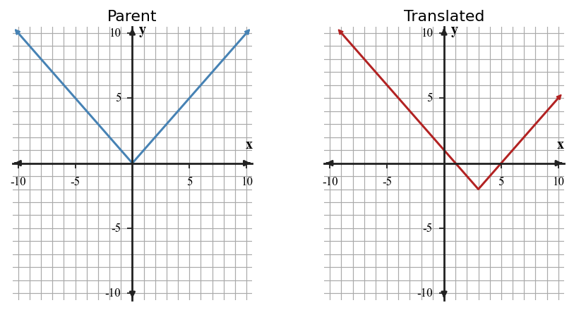
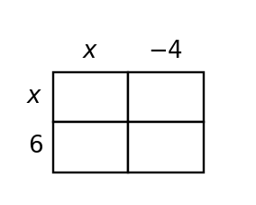
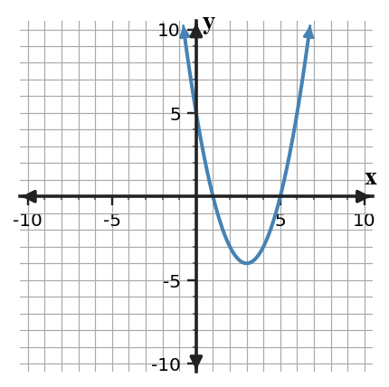

Unit 4 Progress Tracker
Students will analyze, represent, model, and interpret common function families and their transformations across graphs, equations, tables, and contexts.
I need more instruction and practice.
I understand most of it but need more practice.
I can do this independently.
I can teach it.
Progress Tracking
Progress Tracking
Evidence
Progress Tracking
Evidence
Progress Tracking
Evidence
Progress Tracking
Evidence
Learning Ladder
| Rung | I Can Statement | DOK | Level |
|---|---|---|---|
| 8 | I can design a transformed function model that fits multiple constraints from a graph, table, equation, or context. | DOK 4 | Above |
| 7 | I can construct and revise a quadratic or transformed-function representation so its features match a given situation. | DOK 4 | Above |
| 6 | I can critique whether different representations support the same function family, transformation, or graph feature claim. | DOK 3 | Essential |
| 5 | I can assess which form of a polynomial or transformed function best supports a specific graph or context question. | DOK 3 | Essential |
| 4 | I can construct graphs and equations from key points after translations, stretches, compressions, and reflections. | DOK 2 | Essential |
| 3 | I can apply polynomial operations and expression structure to connect equivalent forms with graph features. | DOK 2 | Essential |
| 2 | I can use tables, equations, graphs, and contexts to classify common function families based on evidence. | DOK 1 | Essential |
| 1 | I can apply vocabulary for parent functions, transformations, polynomial terms, and quadratic features. | DOK 1 | Essential |
Student Goal Setting
Unit 4 Practice by Depth of Knowledge
Format: 3-5 minute warm-up, vocabulary check, representation recognition, or exit ticket
Purpose: DOK 1 reveals whether students can access the vocabulary, family features, transformation language, polynomial terms, and quadratic graph features needed for deeper work.
Assessment Ideas
- Function Family Recognition Can Be Assessed After Section 4.1 - Classify linear, quadratic, and absolute value equations by family; connect equation forms to expected graph features or key points.
- Translation Recognition Can Be Assessed After Section 4.2 - Use translation notation and key-point movement to name shifts in words; locate translated vertices for absolute value and quadratic equations.
- Transformation Vocabulary Can Be Assessed After Section 4.3 - Represent reflections, vertical stretches, compressions, and translations with precise vocabulary; connect transformed key points to equation structure.
- Polynomial Feature Recognition Can Be Assessed After Section 4.5 - Determine polynomial terms, product structure, factors, and intercepts from standard and factored forms; connect expression structure to quadratic graph features.
DOK 1 performance shows whether students can quickly recognize family forms, translation notation, transformation vocabulary, polynomial terms, products, factors, and intercept clues before moving into graphing or modeling work.
A table has outputs $\,6, 10, 14, 18$ for consecutive inputs. Name the most likely function family and the evidence.
For $y=2|x-5|+1$, name the function family and identify the key point shown by the equation form.
For $g(x)=f(x-3)+4$, describe the translation from $f$ to $g$.
In $g(x)=-3f(x)$, name the reflection and vertical scale factor.
In $\,5x^2-7x+9$, identify the quadratic term, linear term, and constant term.
Which expression represents a product before it is simplified?
- $(x+4)+(x-2)$
- $(x+4)(x-2)$
- $x^2+2x-8$
- $\,3x^2-5x+1$
For $y=-(x-2)^2+7$, identify the vertex and state whether the graph has a maximum or minimum.
Name the quadratic form that most directly shows the $x$-intercepts, and describe the graph feature those intercepts represent.
Format: Mini-quiz, graph/table task, matching task, partner check, or short written task
Purpose: DOK 2 reveals whether students can carry out procedures and connect representations when function family, transformation, or polynomial structure is given or strongly suggested.
Assessment Ideas
- Graph-Based Family Classification Can Be Assessed After Section 4.1 - Analyze graph sets and evidence cards to classify families; use rates, ratios, symmetry, and turning-point behavior beyond shape alone.
- Translation Graphing Can Be Assessed After Section 4.2 - Construct translated absolute value and quadratic graphs from equations; mark vertices and key points; connect parent-to-translated movement to equations.
- Transformation Graphing Can Be Assessed After Section 4.3 - Apply reflections, vertical scale factors, and translations to graph transformed quadratics and absolute value functions; plot vertices and transformed key points.
- Polynomial and Quadratic Graph Connections Can Be Assessed After Section 4.5 - Use area models and distributive structure to expand products; connect factored quadratic form to intercepts, symmetry, vertex estimates, and sketches.
DOK 2 work reveals whether students can classify function families with evidence, graph translated and transformed key points accurately, and connect polynomial products to quadratic graph features rather than treating each representation separately.
Classify the function family represented by the table. State the evidence using first differences, second differences, or ratios.
| $x$ | 0 | 1 | 2 | 3 |
|---|---|---|---|---|
| $y$ | 2 | 5 | 10 | 17 |
Use the blank coordinate plane to graph $y=|x-2|-3$. Plot the vertex and at least four key points.

Compare the parent and translated graph. Describe the horizontal and vertical shift, then write a possible equation for the translated graph.

The point $(2,5)$ is on $f(x)$. Apply $g(x)=-2f(x)+3$ to this point and explain what changes in the output.
Write a transformed quadratic equation with vertex $(-3,4)$ that opens down and is vertically compressed by factor $\frac{1}{2}$.
Complete the area model for $(x+6)(x-4)$, then write the equivalent expanded expression.

Simplify the expression and explain how like terms combine: $(4x^2-3x+8)-(x^2+5x-2)$.
Use the graph to identify the vertex, axis of symmetry, and two $x$-intercepts. Then write one sentence explaining how the features are connected.

Format: Constructed response, model critique, strategy comparison, representation analysis, or discourse prompt
Purpose: DOK 3 reveals whether students can choose evidence, examine structure, critique claims, and select efficient representations for function families, transformations, and quadratics.
Assessment Ideas
- Graph Evidence Critique Can Be Assessed After Section 4.1 - Critique unsupported family claims with first differences, ratios, rate-change evidence, and representation consistency; revise mismatched table values when needed.
- Translation and Transformation Analysis Can Be Assessed After Section 4.3 - Analyze translation and transformation errors using equation structure and graph evidence; revise incorrect horizontal shifts, vertices, openings, and scale-factor claims.
- Polynomial Area-Model Critique Can Be Assessed After Section 4.4 - Simplify polynomial differences and products while checking signs, like terms, and area-model cells; revise mismatched products and labels.
- Quadratic Graph Feature Reasoning Can Be Assessed After Section 4.5 - Interpret quadratic graph features through zeros, axis of symmetry, equivalent forms, and model constraints; justify which form best reveals each feature.
DOK 3 performance shows whether students can critique family and transformation claims, diagnose polynomial and area-model errors, and reason from quadratic features or equivalent forms instead of relying on procedure or graph shape alone.
A student claims the table is exponential because the outputs get larger faster.
| $x$ | 0 | 1 | 2 | 3 | 4 |
|---|---|---|---|---|---|
| $y$ | 4 | 7 | 12 | 19 | 28 |
Critique the claim using differences or ratios, then state a better family choice.
The equation $y=2|x-1|-3$ and the table are supposed to match.
| $x$ | -1 | 0 | 1 | 2 |
|---|---|---|---|---|
| $y$ | 1 | -1 | -3 | 0 |
Find the first mismatch, justify it with substitution, and revise the incorrect output.
Two students graph $y=-\frac{1}{2}(x+2)^2+5$. One starts with the vertex and symmetry; the other transforms a parent-function table. Explain both methods and why they should produce the same graph.
A student says $y=4(x-3)^2+1$ is wider than $y=x^2$ because the graph is multiplied by $\,4$. Make a reasonableness argument to support or reject the claim.
A student simplifies $(3x^2+2x-7)-(x^2-5x+4)$ as $\,2x^2-3x-3$. Analyze the error and write a corrected simplification strategy.
The area model shown was used to justify the product $(x+3)(x+5)$. Critique whether the labels and cells support that product, then explain what must be revised.

For a quadratic context, compare factored form, vertex form, and expanded form. Which form is most efficient for finding zeros, maximum or minimum, and initial value? Justify each choice.
Analyze the structure of $y=(x+4)(x-2)$ and $y=x^2+2x-8$. Decide whether they are equivalent and explain which graph features each form makes easiest to see.
Format: Brief performance task, modeling task, critique-and-revise task, design task, or capstone synthesis task
Purpose: DOK 4 reveals whether students can synthesize function-family evidence, transformations, polynomial structure, and quadratic features in a short modeling or design setting.
Assessment Ideas
- Four-Representation Graph Modeling Can Be Assessed After Section 4.5 - Design coherent context, table, equation, and graph models for quadratic or other non-linear families; revise mixed representations so all evidence supports one family.
- Translated Function Graph Design Can Be Assessed After Section 4.2 - Create translated absolute value and quadratic functions from vertex, point, and minimum constraints; synthesize equations, tables, sketches, and contexts that agree.
- Transformed Graph Model Synthesis Can Be Assessed After Section 4.3 - Adapt transformed function equations to meet graph and context constraints; synthesize key-point tables, sketches, parameter meanings, and revised coefficients.
- Polynomial and Quadratic Model Design Can Be Assessed After Section 4.5 - Model rectangle perimeter and area with polynomial expressions; revise flawed binomial products with area-model reasoning; create quadratic equations from zeros, vertex output, and graph constraints.
DOK 4 tasks reveal whether students can synthesize coherent models across contexts, tables, equations, and graphs for families, translations, transformations, polynomial expressions, and quadratic constraints. They also show whether students can revise inconsistent representations into one mathematically coherent model.
Design a four-representation model for a quadratic with vertex $(1,-4)$ and $y$-intercept $\,5$. Include a short context, a four-row table, an equation, and a graph-feature description. Explain how all four representations show the same family.
A teammate created a mixed model: the context says a value doubles each round, the table gives outputs $\,3,6,12,24$, and the equation is $y=(x-2)^2+3$. Revise the model so all representations support one family, and explain what you changed.
Create a translated absolute value function with vertex $(4,2)$ that passes through $(6,8)$. Show how the point condition determines the vertical scale, then describe the graph.
Create a transformed quadratic that passes through $(0,0)$ and has vertex $(-2,-8)$. Show how the point condition helps determine the vertical scale factor.
A rectangle has length $x+7$ and width $\,2x-3$. Create a polynomial expression for its perimeter and another for its area. Explain why the expressions have different degrees and what each expression measures.
Create a quadratic model with zeros at $-2$ and $\,6$ and a vertical stretch that makes the vertex output $-16$. Show how the constraints determine the equation and identify the axis of symmetry.
Two models are proposed for the same arch: $A(x)=-(x-2)^2+9$ and $B(x)=-(x-4)^2+9$. Recommend which model fits a symmetry line of $x=2$, and explain the consequence for matching intercepts and context constraints.
A student wrote $P(t)=3(t-5)^2+12$ for a ball-height context that needs a maximum height at $t=5$. Revise the equation structure, explain the graph feature that changes, and describe one limitation of the model in context.